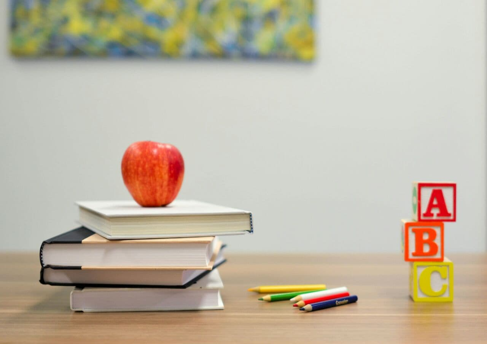

 In my opinion, the most useful thing is to be able to meet other people to do a teamwork. And of course, learn traditional subjects such as math, language and science. But, I don't think that school prepare me well enough for the real world.In my school, they dont teach life skills at all. I just with they would, because while some people can learn from their surroundings and be independent, but some dont. My cousin liyu was a timid little kid, but after attending her class she really shone. She got straight As and was elected for the student council. The school introduced her to swimming and her asthma disappeared. She is so much more confident, alert, smart, and a happy-go-lucky person now thanks to the school which taught life skills. Students from her school learn cookery, how to take care of old people and students are told that the school produces leaders that will truly change the world, and I believe that without compassion, kindness, and experience since childhood, no matter how smart she are, will be always falling off from the same cliff, and if you cant save yourself how can you save others? This is why is think it is important for schools to teach life skills.Of course, my school is not preparing for me as well as I wish. I want them to teach me some life skills like making cakes, gardening, doing jobs... And that's gonna be great And of course, learn traditional subjects such as math, language and science. But, I don't think that school prepare you well enough for the real world.In my high school, teaching life skills as well as traditional subject such as math history and science. High school teacher say 'preparing adult life is important for every one ' .They gives us opportunity to develop talent. I think.preparing adult life is important especially work experience .people prepare only university exam.They don't interested in social skills .They say 'preparing adult life is waste of time because I'm not interested in future '. On the other hand ,some people say ' I learn social skill from part time job' . Some people don't interested in University .They want to work after high school .in addition High school education is occasionally poor experience . To sum up ,developing life skill is essential for us .